In some of the previous articles in this series, we have looked at how we can modify the behaviour of an application by patching it using IDA Pro, Hopper etc. However, doing this hasn’t been quite straightforward always. We can also use Cycript to modify the behaviour of an application by changing some of the method implementations, but the change isn’t permanent. This is where writing tweaks for an application comes in handy. A tweak is nothing but a run-time patch to an application using the Cydia Substrate framework. Cydia Substrate consists of 3 major components: MobileHooker, MobileLoader and safe mode. You can read about these 3 major components here. Saurik has also written a complete series of documentation here. Our main focus here would be not to go in depth and learn how to write tweaks for jailbroken devices but to understand there relevance to application security so we can quickly write our own tweaks when necessary.
By default, on compiling and building a tweak, it gets converted into the .dylib format and is stored in the location /Library/MobileSubstrate/DynamicLibraries on the device. There is a plist file with the same name but the extension .plist with every .dylib file that determines certain configuration settings for the tweak. For e.g, one of the most popular configuration settings is Filter. You can use this configuration to filter the library or process you want to inject the code into. You can read more about filters and configurations here.
If you have a jailbroken device and have installed tweaks before from Cydia, you can clearly see these tweaks being injected into different applications during runtime by simply looking at the logs. Go to Xcode -> Window -> Organizer -> Devices & select your device and click on Console. Make sure your device is connected to your computer. You will see the tweaks being loaded into your application as you open applications on your device.
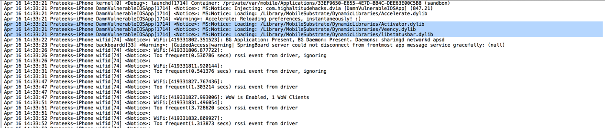
It is also a good idea to check the folder /Library/MobileSubstrate/DynamicLibraries on your device and see all the tweaks you have installed on your device. You can do this by using a simple utility like iExplorer. Also, it is recommended to check the plist files for these installed extensions to see how they impose their restrictions on specific libraries and applications.
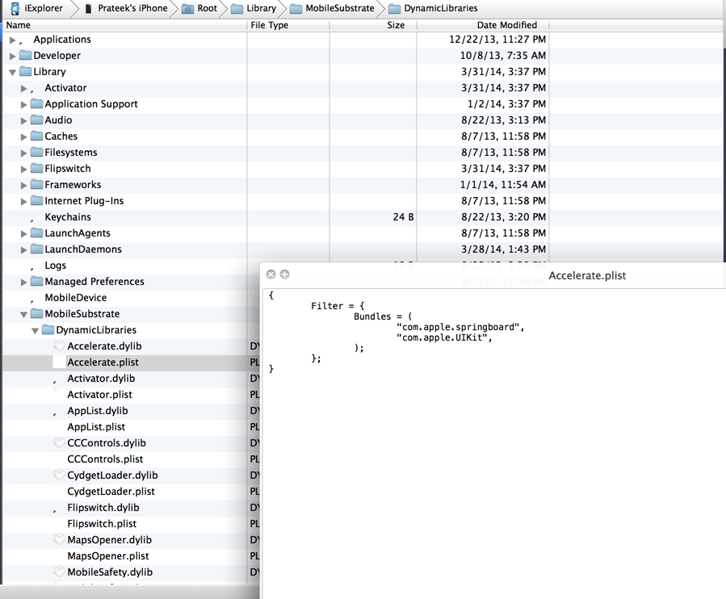
By far, the most preferred way of creating tweaks for iOS is by using Theos. To set up theos on your device, you can follow the instructions mentioned here. It’s pretty straightforward but make sure that the path where you are creating tweaks doesn’t include some directories that have spaces in them. It has caused problems for me in the past and hence i would recommend you to avoid it.
For help, you can always go to the IRC channel where most of the big names hang out and are willing to help. There is a channel for Substrate (#substrate) and Cycript (#cycript) on the server irc.saurik.com. Apart from this, there is also a channel for theos (#theos) and channels for specific jailbreak questions such as #jailbreakqa on irc.freenode.net.
Please note that if something goes wrong once you build and deploy a tweak then you should immediately remove the tweak from /Library/MobileSubstrate/DynamicLibraries. For e.g, if your phone is not booting properly, you can still connect to it over iExplorer and remove the dylib and plist file for the tweak that you think screwed your application.
So let’s write a tweak. We will test our skills on Damn Vulnerable iOS Application. We will solve the first challenge in the Runtime Manipulation section, where we have to bypass the login check on tapping Login Method 1 as shown in the image below.
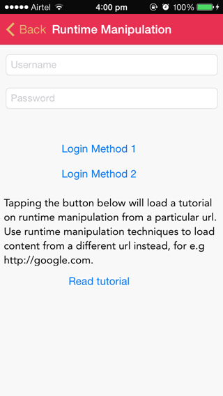
Open theos and select the option to create a tweak. Let’s name the project as DVIABypass. It will also ask you to specify the bundle identifier. Since we only want the tweak to hook into DVIA, we will specify the bundle identifier for DVIA only. In case you don’t know how to find out the bundle identifier for a particular application, you can always find it out by inspecting the Info.plist file in the application folder for a particular app using iExplorer. You will see that this bundle identifier will automatically get added in the plist file for your tweak created by Theos.
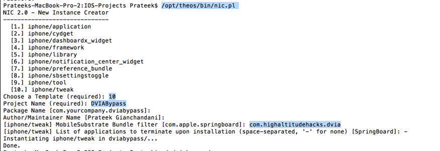
As we can see, the project folder has been created. Let’s navigate inside it.
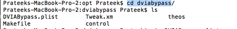
Here you can see some weird files. The plist file is the one that we discussed about previously. This file is copied over to your device along with the generated dynamic library. The Tweak.xm file is where all your hooking code will go. The Makefile is where you will add all the needed frameworks and other global variables.
In order to write a tweak for a particular application or library method, we must know the header file information of the classes we want to hook into. The header file information can easily be dumped by using class-dump-z. In this case, since we are only dealing with the application DVIA, we need to just dump the class methods for that particular application. However, if you want to hook into any method of Springboard, you need to have the entire class information of it. One option is to either dump the entire content yourself using class-dump-z. Another option is to get it from some other people’s repositories. For e.g, here is a Github repository that contains the headers dumped for Springboard in iOS 7.
By looking at the class information for DVIA, we can figure out that we want to hook into the method isLoginValidated in the view controller RuntimeManipulationDetailsVC.
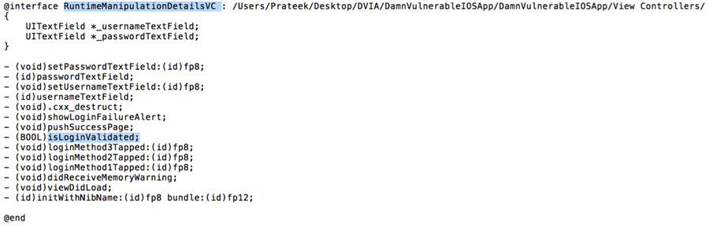
Now lets look at the Tweak.xm file. Just reading it will tell you a lot about how to go ahead and write and your own tweak. I am not going to explain what is already written here, it will be very easy to understand it anyways.
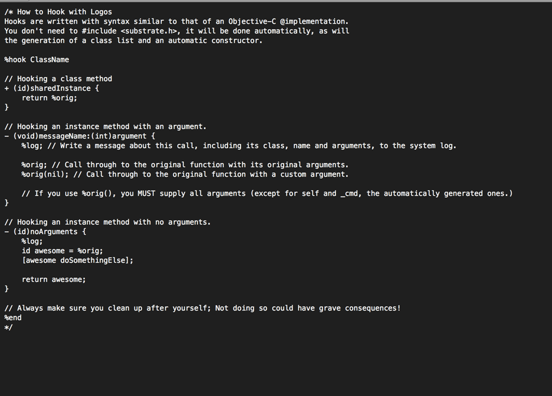
Replace your Tweak.xm file with the following lines of code. As you can clearly note here, this patch hooks into the class RuntimeManipulationDetailsVC, hijacks the implementation of the method isLoginValidated, and replaces it with our own implementation which returns TRUE every time.
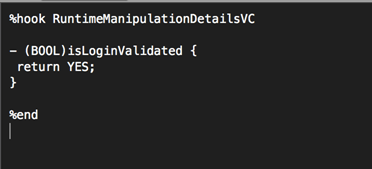
Now make sure you have all the proper variables set. Make sure your computer and device are connected to the same wifi network. The first time you make a package and install it on the device, you will be prompted for the ssh password.
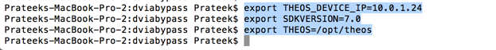
Now build the package and install it by using the command make package install
. 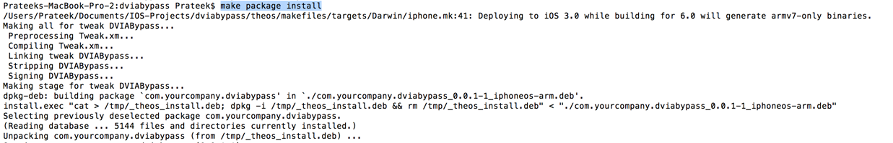
And now everytime you tap on the button that says Login Method 1 in DVIA, you will notice that the login will be bypassed.
You can also double check whether the package has been installed on your device by looking for the dylib file for your package in the directory /Library/MobileSubstrate/DynamicLibraries.
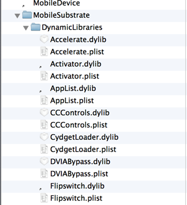
And if you feel that you have screwed up with your tweak, just remove the dylib and plist files from this folder and restart your device.
The important thing to note about creating a tweak or a patch while doing security assessment of iOS applications is that the change is permanent and the whole process is also not as tough as patching an entire method by modifying the diassembly. While we didn’t cover some of the basic stuff regarding developing for jailbroken devices, i would recommend you to to read this article as it explains things in much more depth.
If you have any questions, comments or suggestions, feel free to write them down in the comments section below and i will get back to you.